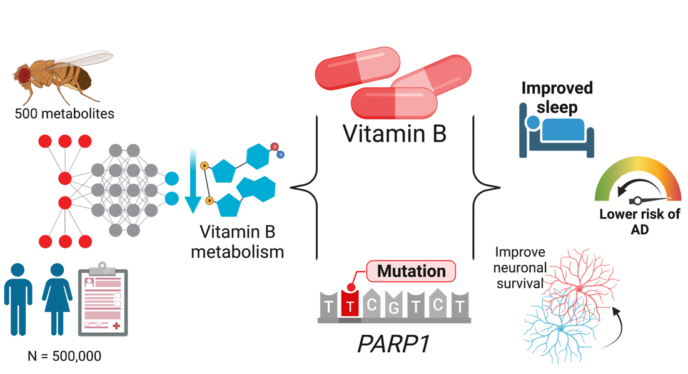
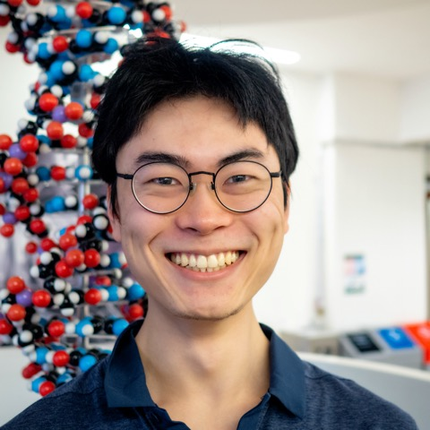
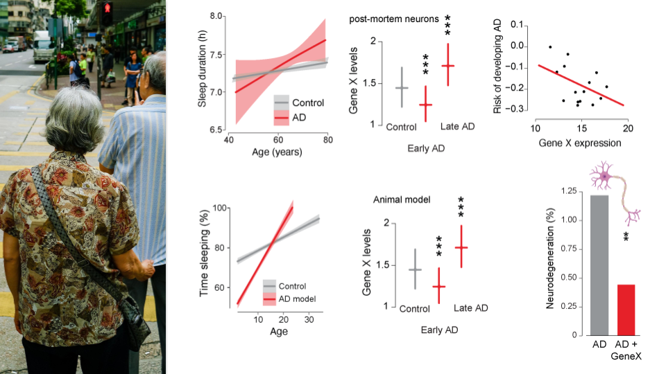
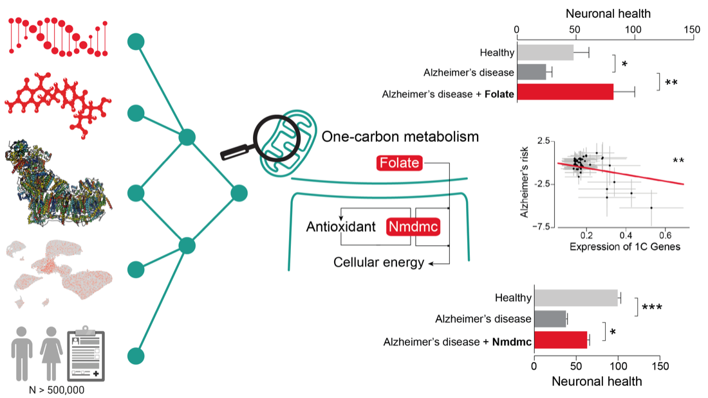

PARP mutations protect from mitochondrial toxicity in Alzheimer's disease
Metabolomics in a fly model revealed reduced nicotinamide metabolism. In flies and humans, boosting NAD+ availability proved neuroprotective.

Scientist & Entrepreneur
Computational biologist at the University of Cambridge, using AI and single-cell genomics to understand disease.
Founder of OneCarbon, turning brain research into a daily probiotic for cognitive health.
As a Senior Computational Biologist / Assistant Research Professor in Prof. Sarah Teichmann's group (Cambridge Stem Cell Institute), I build AI and machine-learning pipelines that integrate single-cell and spatial transcriptomics at scale. I apply Human Cell Atlas technologies to map inflammatory neuropathy — turning large, high-dimensional multiomic data into interpretable disease biology.
I founded OneCarbon to turn my research into something people can use. Our daily probiotic, 1C-01, delivers one-carbon metabolites through the gut–brain axis to support cognitive health as we age. It's built on five peer-reviewed Cambridge studies and an 83% improvement in mitochondrial function in animal models — and we're now running our first clinical trial, PROFILE.
I combined multiomics, animal models and human data to find therapeutic targets for Alzheimer's disease, uncovering protective roles for NAD+, one-carbon metabolism and sleep-related genes — the science OneCarbon is built on.
I integrate genomic, transcriptomic, proteomic, metabolomic and behavioural data to understand disease — pinpointing biomarkers and therapeutic targets for personalised medicine.
I generate data from cells, animal models, patients and population-scale cohorts, then analyse it with AI/ML. Combining modalities overcomes the limits of any single one.
Please visit my Google Scholar page for the full list.

Metabolomics in a fly model revealed reduced nicotinamide metabolism. In flies and humans, boosting NAD+ availability proved neuroprotective.

Sleep changes can precede Alzheimer's. We linked distinct forms of amyloid-β to altered sleep duration via NAD+ redox metabolism and the protein hyperkinetic.

Mitochondrial one-carbon metabolism is disrupted in Alzheimer's. Boosting it — genetically or with folinic acid — restored mitochondrial function and tracked with human AD risk.
I co-founded the International Sleep Charity (Charity number: 1123736), where I research the causes of poor sleep and develop ways to help people sleep better.
I earned my PhD with Dr L. Miguel Martins at the University of Cambridge, after a first-class BSc in Biological Sciences from Imperial College London (2019).
Outside the lab I row, join hackathons and renovate houses — when there's time.
Please see my CV for the full list.
2026
2025 — on behalf of the OneCarbon team
Gonville & Caius College, University of Cambridge
Cambridge Society for the Application of Research — on using probiotics to treat Alzheimer's disease
Selected as the University of Cambridge student to attend the 72nd Lindau Nobel Laureate Meeting in Physiology/Medicine, 2023
Identification of aripiprazole-binding proteins using thermal proteome profiling
2023 — Cambridge Gravity
Including from Alzheimer's Research UK, Hughes Hall (University of Cambridge) and the British Neuroscience Association
Thanks for visiting! Reach me at yizhou0421 [at] gmail.com or use the form below if you have any questions or would like to connect.